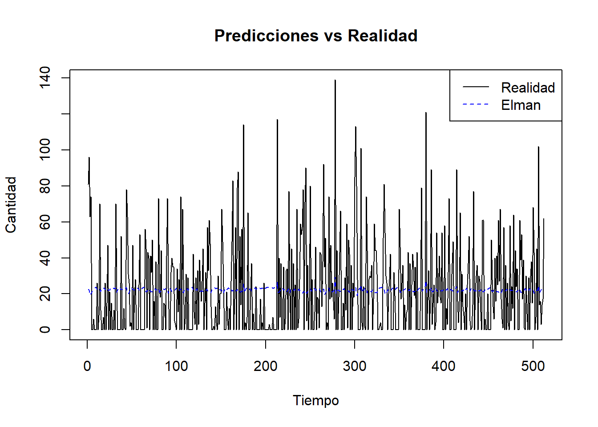
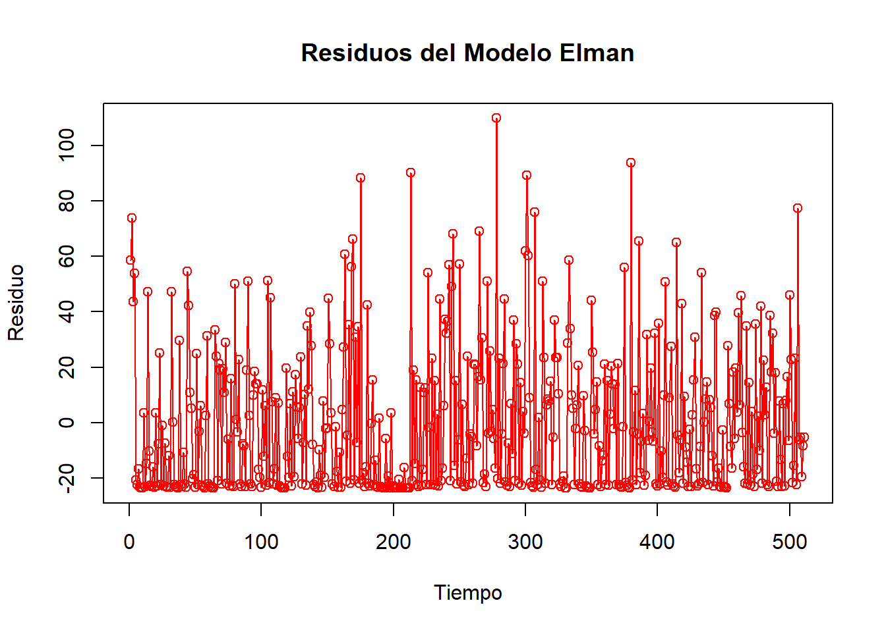
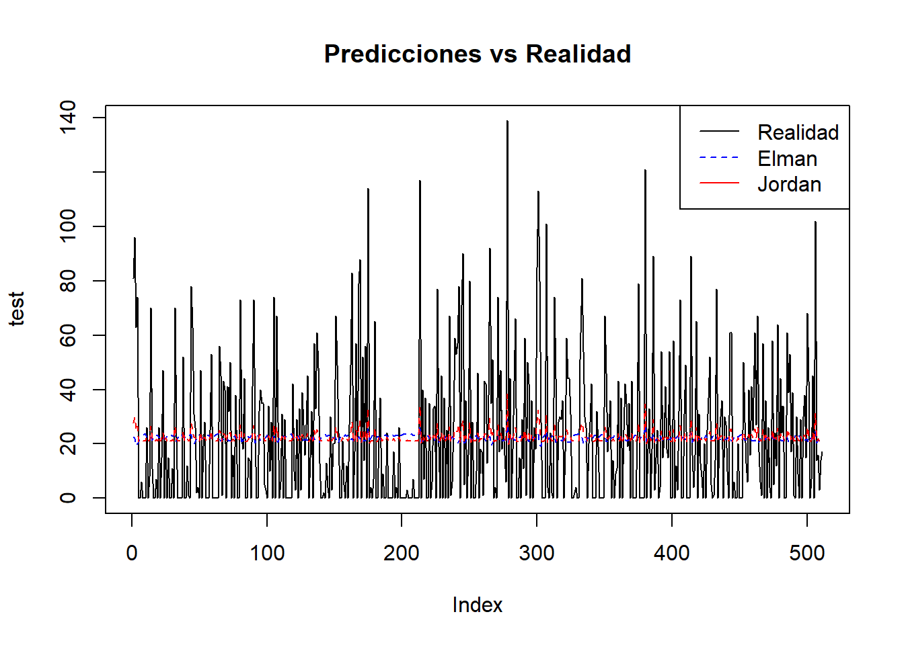
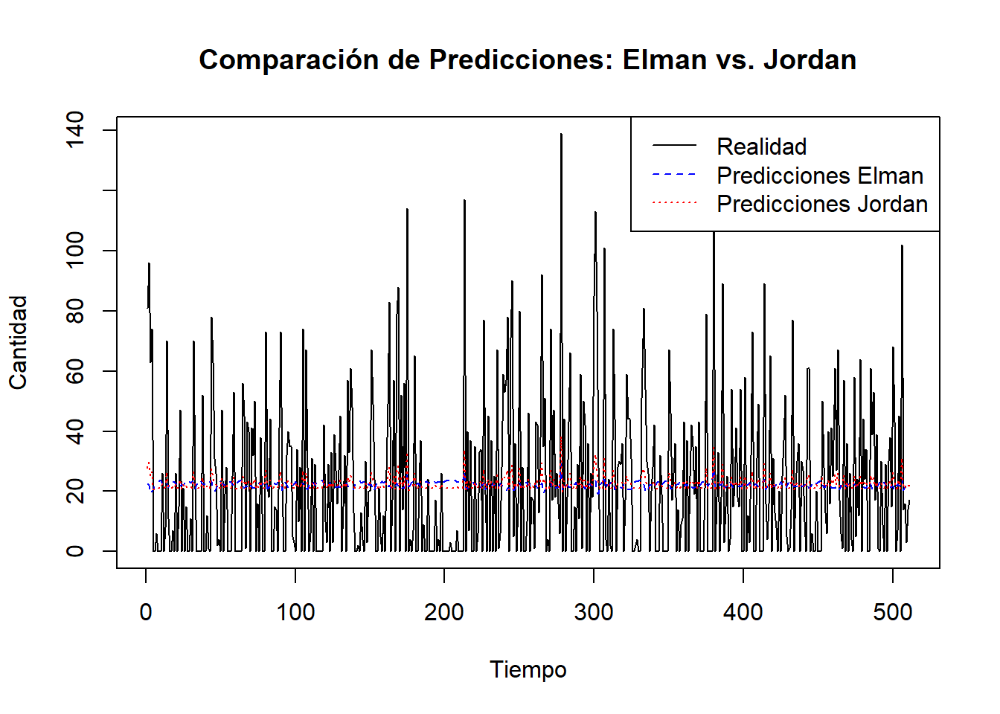
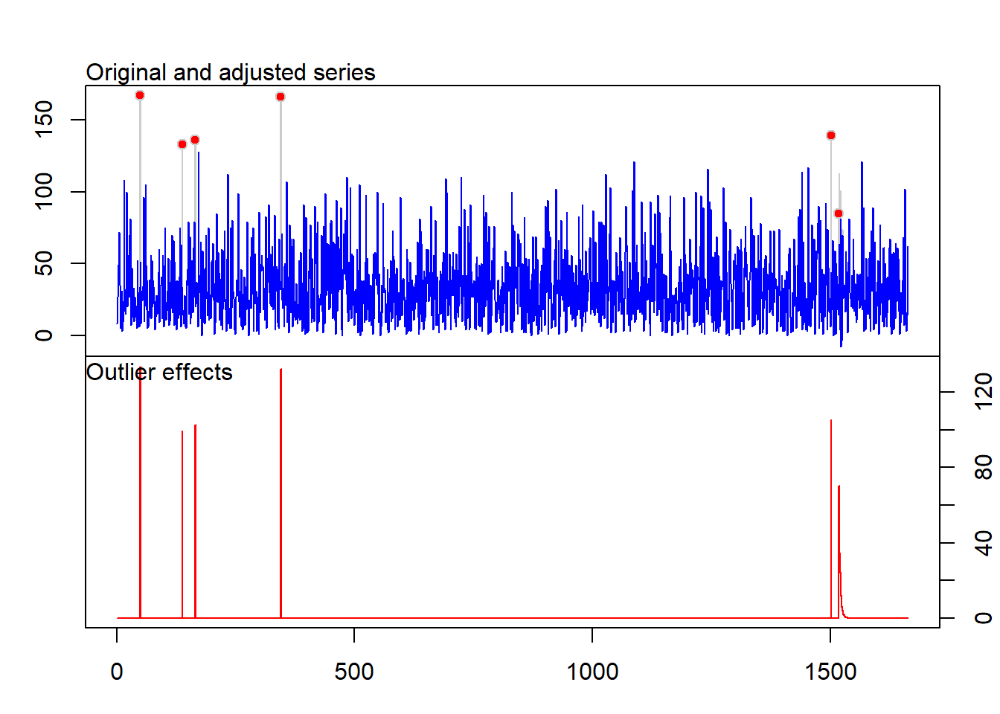

Chapter 11 Conclusiones y Recomendaciones:
El análisis de series de tiempo proporciona información valiosa para la planificación y toma de decisiones. El pronóstico de ventas permite anticipar la demanda futura y optimizar la gestión de inventarios, la asignación de recursos y las estrategias de marketing.
Se recomienda utilizar el pronóstico generado como una herramienta de apoyo para la toma de decisiones, pero siempre teniendo en cuenta la incertidumbre inherente a los pronósticos. Es importante monitorear el desempeño real de las ventas y ajustar las estrategias de la empresa en función de los resultados observados.
## Registered S3 method overwritten by 'quantmod':
## method from
## as.zoo.data.frame zoolibrary(tseries) # Para pruebas de estacionariedad
datos <- readxl::read_excel("MUESTRA SERIE TIEMPO.xlsx")
sum(datos$quantity)## [1] 56617## tibble [2,679 × 18] (S3: tbl_df/tbl/data.frame)
## $ transaction_item_id: num [1:2679] 51 80 110 142 146 168 206 237 278 314 ...
## $ Transaction_id : num [1:2679] 34 55 78 103 110 124 151 165 189 213 ...
## $ transaction_date : Date[1:2679], format: "2014-01-01" "2014-01-02" ...
## $ Time : num [1:2679] 0.648 0.434 0.489 0.682 0.655 0.578 0.401 0.465 0.369 0.633 ...
## $ Sucursal_id : num [1:2679] 0 0 2 0 0 2 0 1 0 0 ...
## $ sucursal_name : chr [1:2679] "Guacari" "Guacari" "Tulúa" "Guacari" ...
## $ Product_id : num [1:2679] 14 14 14 14 14 14 14 14 14 14 ...
## $ product_name : chr [1:2679] "Producto 14" "Producto 14" "Producto 14" "Producto 14" ...
## $ category : chr [1:2679] "Accesorios" "Accesorios" "Accesorios" "Accesorios" ...
## $ brand : chr [1:2679] "Panasonic" "Panasonic" "Panasonic" "Panasonic" ...
## $ quantity : num [1:2679] 8 14 13 34 8 24 25 37 23 49 ...
## $ cost : num [1:2679] 39000 39000 39000 39000 39000 39000 39000 39000 39000 39000 ...
## $ discount : num [1:2679] 0.02 0.02 0.03 0.03 0.02 0.06 0.02 0 0.06 0.06 ...
## $ Promotion : chr [1:2679] "N" "N" "N" "N" ...
## $ id_cliente : num [1:2679] 1 54 81 1 8 2 1 40 1 58 ...
## $ client_name : chr [1:2679] "Clientes Varios" "Cliente_53" "Cliente_80" "Clientes Varios" ...
## $ Type : chr [1:2679] "Natural" "Natural" "Natural" "Natural" ...
## $ location : chr [1:2679] "Guacari" "Tulua" "Guacari" "Guacari" ...# Asumiendo que la primera columna es la fecha y la segunda la variable de interés
datos_ts <- ts(datos$quantity, frequency = 12, start = c(2017, 1), end = c(2020,12))
# Ajusta 'frequency' según la frecuencia de tus datos (12 para datos mensuales)
plot(datos_ts) # Gráfico de la serie de tiempo


##
## Augmented Dickey-Fuller Test
##
## data: datos_ts
## Dickey-Fuller = -2.7329, Lag order = 3, p-value = 0.2814
## alternative hypothesis: stationary#Si la prueba indica que la serie no es estacionaria, deberás diferenciarla:
datos_ts_diff <- diff(datos_ts)
adf.test(datos_ts_diff)## Warning in adf.test(datos_ts_diff): p-value smaller than printed p-value##
## Augmented Dickey-Fuller Test
##
## data: datos_ts_diff
## Dickey-Fuller = -4.6247, Lag order = 3, p-value = 0.01
## alternative hypothesis: stationarymodelo_auto <- auto.arima(datos_ts_diff, ic = "bic") # Puedes usar "bic" también
summary(modelo_auto)## Series: datos_ts_diff
## ARIMA(1,0,0) with zero mean
##
## Coefficients:
## ar1
## -0.5468
## s.e. 0.1299
##
## sigma^2 = 227.5: log likelihood = -193.9
## AIC=391.79 AICc=392.07 BIC=395.49
##
## Training set error measures:
## ME RMSE MAE MPE MAPE MASE ACF1
## Training set 0.4678724 14.92075 11.85491 80.97321 148.3785 0.6092831 -0.1055607
##
## Ljung-Box test
##
## data: Residuals from ARIMA(1,0,0) with zero mean
## Q* = 10.279, df = 8, p-value = 0.246
##
## Model df: 1. Total lags used: 9pronóstico <- forecast(modelo_auto, h = 12) # Pronóstico para los próximos 12 periodos
plot(pronóstico)